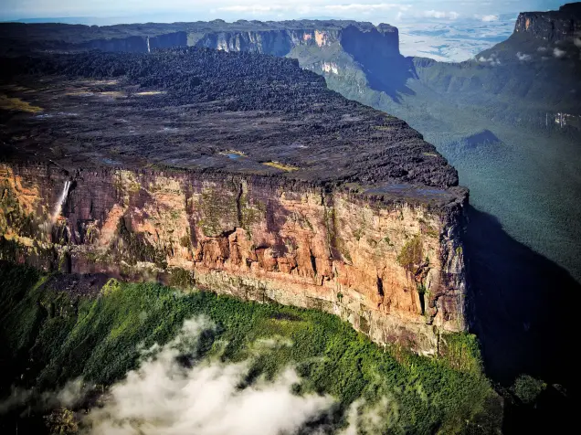

Roraima é um estado localizado na região Norte do Brasil, conhecido por sua natureza exuberante e paisagens únicas. A capital, Boa Vista, é uma cidade moderna e acolhedora, rodeada por uma vasta área de cerrado e rios. Roraima faz parte da região da Amazônia, mas também possui áreas de planalto e savana, oferecendo uma diversidade de ecossistemas. Uma das principais atrações do estado é o Monte Roraima, uma formação de tepui (montanha de topo plano) que é um dos pontos mais altos da região e um destino famoso para aventureiros e trekkers, além de ser considerado um dos lugares mais misteriosos e impressionantes do mundo. Roraima também é conhecido por sua cultura indígena rica e diversificada, com várias comunidades tradicionais que preservam suas línguas, costumes e tradições. É um lugar cheio de belezas naturais e história, perfeito para quem gosta de explorar a natureza e a cultura indígena!
